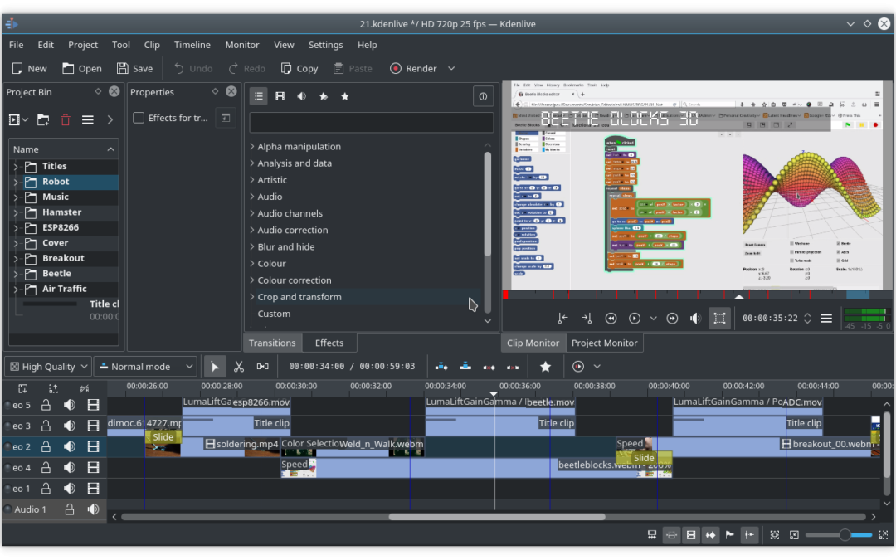
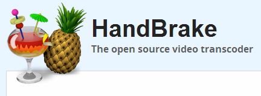

DevOps
The Web
Categorie
Multimedia
Profiel Content Creator
tooling Video Editing & Transcoding
 Video editing is het rangschikken en bewerken van segmenten van filmbeelden van bewegende videoproductie, speciale effecten en geluidsopnames in het postproductieproces van videobeelden. Video editing wordt gebruikt om alle video informatie te structureren en te presenteren, inclusief films en televisieprogramma's, video advertenties en video essays.
Video editing is het rangschikken en bewerken van segmenten van filmbeelden van bewegende videoproductie, speciale effecten en geluidsopnames in het postproductieproces van videobeelden. Video editing wordt gebruikt om alle video informatie te structureren en te presenteren, inclusief films en televisieprogramma's, video advertenties en video essays.
→ zie: Wikipedia Video Editing
Video editing is de afgelopen jaren enorm gedemocratiseerd door bewerkingssoftware die beschikbaar is voor personal computers en werkstations, en omvat snijsegmenten (bijsnijden), resequencing van clips en het toevoegen van overgangen en speciale effecten.
Film editing is een voorloper van video editing en op verschillende manieren simuleert video editing de film editing, door het gebruik van lineaire video bewerking software en niet lineaire bewerking (NLE). Met behulp van video editing kan een regisseur niet fictieve en fictieve gebeurtenissen communiceren. Het doel van bewerken is om deze gebeurtenissen te manipuleren om de communicatie dichter bij het (oorspronkelijke) doel te brengen. Het is een visuele kunst.
Video Editing kenmerken
Linear video editing met behulp van videoband en wordt op een zeer lineaire manier bewerkt. Verschillende videoclips van verschillende banden worden opgenomen op een enkele band in de volgorde waarin ze verschijnen.
Niet lineair bewerkingssysteem (NLE), dit wordt bewerkt op computers met gespecialiseerde software. Deze zijn niet destructief naar de video die wordt bewerkt en gebruik programma's zoals Adobe Premiere Pro, Final Cut Pro en Avid
Offline bewerken is het proces waarbij onbewerkte beelden worden gekopieerd van een originele bron, zonder het origineel te beïnvloeden. Nadat de bewerking volledig is bewerkt, worden de oorspronkelijke media opnieuw geassembleerd in de online bewerkingsfase.
Online bewerken is het proces waarbij de bewerking weer wordt samengevoegd tot video met volledige resolutie nadat een offline bewerking is uitgevoerd en gebeurt in de laatste fase van een videoproductie.
Vision mixen, wanneer u werkt in live televisie- en video productie omgevingen. Er wordt een vision mixer gebruikt om live feed van verschillende camera's in realtime te knippen.
- Video Editing tooling níet OpenSource
-
Alternatieve niét (free) opensource is Adobe Premiere Pro geschikt voor Windows en macOS (betaald), Davinci Resolve geschikt voor Windows, macOS en Linux (betaald), PowerDirector geschikt voor Windows (betaald), Lightworks geschikt voor Windows, macOS Linux (betaald), HitFilm Express geschikt voor Windows en macOS (betaald), Apple Final Cut Pro X geschikt voor macOS (betaald), Avid Media Composer First geschikt voor Windows, macOS (betaald), VideoPad geschikt voor Windows, macOS, Andriod, iOS (betaald), Windows Movie Maker geschikt voor Windows (free), Apple iMovie geschikt voor macOS, iOS (free).
- Video Editing tooling wél OpenSource
-
Wél (free) opensource is OpenShot geschikt voor Windows, macOS, Linux (free), KdenLive geschikt voor Windows, macOS, Linux (free), Shotcut geschikt voor Windows, macOS, Linux (free), Olive geschikt voor Windows, macOS, Linux (free).
Kdenlive

Kdenlive (KDE) is free opensource niet lineaire video editor op basis van het MLT Framework, KDE en Qt. KDE maakt gebruik van MLT-, Frei0r-effecten, SoX- en LADSPA-bibliotheken.
→ zie: Wikipedia Kdenlive
→ zie: Website KdenLive download & get started
- Kenmerken
-
Kdenlive ondersteunt alle formaten die worden ondersteund door FFmpeg of libav zoals QuickTime, AVI, WMV, MPEG en Flash Video, oa, en ondersteunt ook beeldverhoudingen van 4:3 en 16:9 voor zowel PAL, NTSC en verschillende HD normen, inclusief HDV en AVCHD. Video kan ook worden geëxporteerd naar DV-apparaten of worden geschreven naar een dvd met hoofdstukken en een eenvoudig menu.
Heeft multi-track bewerking met een tijdlijn en ondersteunt een onbeperkt aantal video- en audiotracks. Een ingebouwde titeleditor en hulpmiddelen om videoclips, audioclips, tekstclips en afbeeldingsclips te maken, verplaatsen, bijsnijden en verwijderen. mogelijkheid om aangepaste effecten en overgangen toe te voegen.
Een breed scala aan effecten en overgangen. Audio-effecten zijn onder meer normalisatie, fase- en onhoogte-verschuiving, beperking, volumeaanpassing, galm- en egalisatiefilters evenals andere. Visuele effecten omvatten opties voor maskeren, blauw scherm, vervormingen, rotaties, kleurgereedschappen, vervaging, verduistering en andere.
Configureerbare sneltoetsen en interface-indelingen. Renderen gebeurt met behulp van een afzonderlijk niet-blokkeerproces, zodat het kan worden gestopt, onderbroken en opnieuw gestart.
Biedt ook een script met de naam Kdenlive Builder Wizard (KBW) dat de nieuwste ontwikkelaarsversie compileert van de software en de belangrijkste afhankelijkheden van de bron, zodat gebruikers nieuwe functies kunnen proberen en meld problemen op de bug-track.
HandBrake

HandBrake is een free opensource transcoder tool voor digitale videobestanden. De software wordt gebruikt om films en videobestanden te transcoderen naar een eenvoudiger te archiveren formaat. HandBrake is beschikbaar voor Linux, macOS en Windows.
→ zie: Wikipedia HandBrake
→ zie: Website HandBrake download & get started
- Kenmerken
-
Hardware acceleratie: sommige GPU's of APU's bevatten SIP-blokken die zijn bedoeld voor het uitvoeren van berekeningen voor videocodering (bijvoorbeeld Quick Sync Video, NVENC of Video Coding Engine). Dergelijke oplossingen zijn beperkt tot de veelgebruikte codecs. Bij gebruik zijn ze erg snel [6], maar afhankelijk van de ASIC-hardwaregeneratie komen ze al dan niet overeen met de kwaliteit van goede software-encoders. HandBrake ondersteunt Intel Quick Sync sinds versie 0.10.0 (november 2014). NVENC- en VCE-ondersteuning is in december 2018 toegevoegd in versie 1.2.0.
Transcodering: gebruikers kunnen de output aanpassen door de bitsnelheid, maximale bestandsgrootte of bitsnelheid en samplefrequentie te wijzigen via "constante kwaliteit". HandBrake ondersteunt ook adaptieve deinterlacing, scaling, detelecine en cropping, zowel automatisch als handmatig.
Batches: HandBrake ondersteunt batchcodering via een grafische gebruikersinterface (GUI) en opdrachtregelinterface (CLI). Specifiek voor dit doel bestaan scripts en UI's van derden, zoals HandBrake Batch Encoder, VideoScripts, en Batch HandBrake. Allen maken gebruik van de CLI om wachtrijen van meerdere bestanden in een enkele directory mogelijk te maken.
Sources: Handrem transcodeert video en audio van bijna elk formaat naar een handvol moderne, maar het verslaat of omzeilt geen kopieerbeveiliging. Een vorm van invoer is dvd-video die is opgeslagen op een dvd, in een ISO-afbeelding van een dvd of op elk gegevensopslagapparaat als een VIDEO_TS-map. De ontwikkelaars van HandBrake hebben libdvdcss (de open-sourcebibliotheek die verantwoordelijk is voor het decoderen van dvd's die zijn gecodeerd met het Content Scramble System (CSS)) uit de applicatie verwijderd in versie 0.9.2. Het verwijderen van Digital Rights Management (DRM) van dvd's met HandBrake was mogelijk door VLC te installeren, een mediaspelertoepassing met de libdvdcss-bibliotheek. Momenteel kan Handbrake DRM alleen verwijderen nadat de gebruiker de nieuwste versie van libdvdcss heeft geïnstalleerd.
Net als bij dvd's ondersteunt HandBrake het decoderen van Blu-ray Discs niet rechtstreeks. HandBrake kan echter worden gebruikt om een Blu-ray Disc te transcoderen als DRM voor het eerst wordt verwijderd met een applicatie van derden, zoals MakeMKV. In tegenstelling tot HandBrake transcodeert MakeMKV niet; het verwijdert het beheer van digitale rechten van een Blu-ray Disc en creëert een exacte kopie, met de oorspronkelijke framegrootte en datasnelheid, in een Matroska (MKV) multimediacontainer die vervolgens kan worden gebruikt als bron in HandBrake.
Download Web Video & Muziek
Tool “youtube-dl” is er om op The Web geplaatste video’s en muziek te downloaden naar eigen computer {localhost: IPv4 adress 127.0.0.1 & IPv6 address ::1}. En het is cross platform dus voor elk gangbaar OS is er een versie. Omdat tool wereldwijd meest gangbare is zit het standaard bij Linux in de repository van meeste distro’s.
→ zie: Wikipedia youtube-dl
→ zie: Overzicht websites youtube-dl supported
→ zie: GitHub youtube-dl download & get started
- Kenmerken
-
Omdat youtube-dl bij Linux in meeste distro's is opgenomen kan installeren via GUI navigatie vanuit “Programmabeheer”. Of via terminal $ sudo apt install youtube-dl. Regelmatig verschijnen er nieuwe versies en voor een update via terminal $ sudo youtube-dl -U
Voorbeeld om playlist te downloaden:
$ pwd
/home/andy/DevOps/
$ youtube-dl -f bestvideo[ext=mp4]+bestaudio[ext=m4a]/mp4 -o '%(title)s.%(ext)s' {URL van video of playlist}
Waarbij:
→ werk directory voor opslaan van video: andy@laptop ~/DevOps
→ commando: youtube-dl
→ vlag voor mp4 HD format: -f bestvideo[ext=mp4]+bestaudio[ext=m4a]/mp4
→ vlag voor originele titel opslaan: -o '%(title)s.%(ext)s'
→ url oftewel link naar video: {URL van video of playlist}